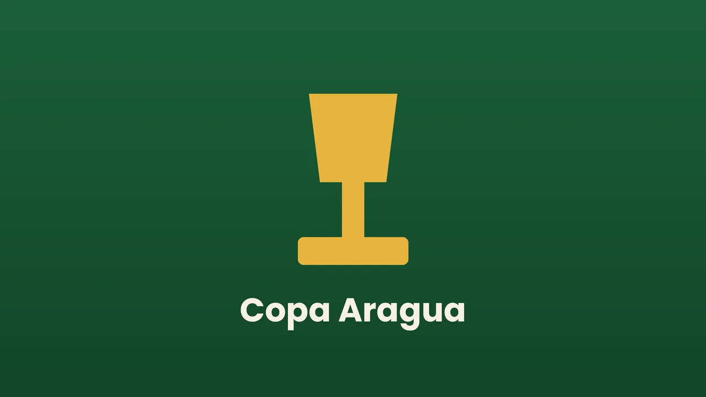
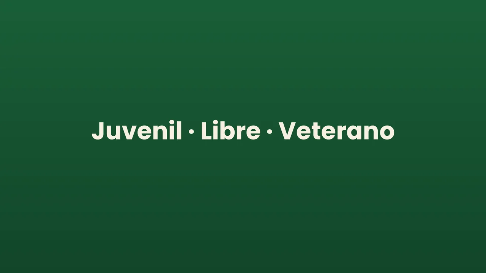
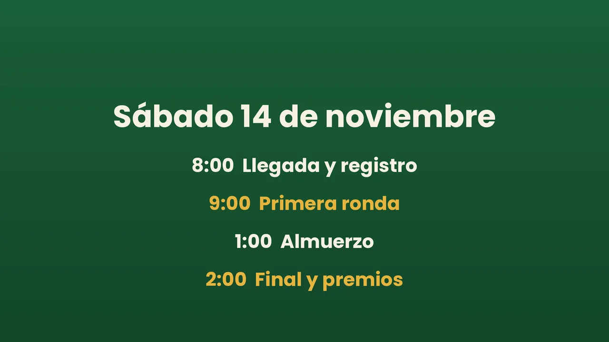

Premios
Qué se gana y cómo se organiza el día.

Copa Aragua
La pareja campeona recibe la Copa Aragua y un diploma. El segundo y tercer lugar reciben medallas.
Categorías
Hay tres categorías: Juvenil, Libre y Veterano. Cada pareja se inscribe en la categoría que corresponde a la edad de sus integrantes.


Cronograma del día
8:00 llegada y registro, 9:00 primera ronda, 1:00 almuerzo y 2:00 final con entrega de premios.